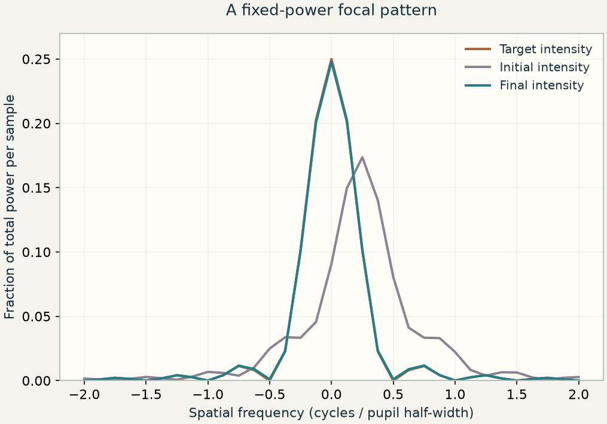

当前概念
可微光学
本章涉及
将光学预测连接到任务损失，检验导数，再更新光学或数字设计参数。

本章涉及的概念
在知识图谱中查看本章 ↓E13 / 为什么学这一课？
逐一尝试每个透镜曲率或相位系数的代价很高。导数把测量误差与光学模型中的参数联系起来，让设计沿着计算出的方向更新。
你将学会： 建立并检验可微光学计算，理解它与伴随法的关系，并明确扩展到光学与重建联合设计之前需要补充什么。
学习 E13 之前 / 预备知识
针对不熟悉的概念阅读指定章节，然后回到本课。
第 32、34 节介绍多变量链式法则，第 35 节介绍梯度，第 38 节介绍方向导数。
重点阅读复向量、共轭转置、厄米矩阵和酉矩阵。结尾的 FFT 算法可选学。
Python 实验准备： 操作复数数组，并比较相邻参数设置处的标量函数值。
NumPy · 初学者基础指南 ↗ · NumPy · 离散傅里叶变换 ↗
本课将展开： 连接参数化光学、反向导数、梯度检验与设计更新；无需深度学习框架。
浏览全部预备知识与学习资源 →E12 定义什么样的镜头更好，E10 用伴随法一次求出许多灵敏度。可微光学将两者连接起来：把光学预测写成一系列运算，再将损失的灵敏度传回实际可调的物理参数。
这里 x 是归一化瞳坐标，q 表示采样的焦面空间频率，a、b 是以弧度计的实数相位系数，u 是瞳面场，v 是焦面场，I 是强度。孔径与入射功率保持固定。目标 I★ 是同一孔径在指定倾斜 a★、零离焦时的聚焦图样。
F 是酉离散傅里叶变换。瞳振幅 A 固定，并归一化为 ΣA² = 1，因此 ΣI = 1。相机测量场模的平方，并不直接测量相位；但传播中的干涉会让强度依赖相位。
02 / 检验预测
所有光场和曲线均由所述模型计算得到。检验预测时，请固定其余参数。
调整参数之前，先做预测
改变相位掩模不会改变掩模处的局部强度，但它能改变焦面强度吗？先预测倾斜和离焦控件的作用，再比较零次与四十次更新。
模型： 单色一维标量相位瞳，振幅与功率固定，采用酉傅里叶传播和两个连续实数参数。探测器采样归一化强度。不模拟偏振、材料色散、像素积分、噪声、加工过程或学习式重建。低损失表明当前模型与目标吻合，并不证明参数恢复唯一或实物性能良好。
S 是目标强度的固定平方范数。除以 S 得到相对该目标的无量纲损失；对设计求导时 S 保持不变。它比较完整采样图样，而不只比较峰值。真实相机还包含像素积分、噪声和饱和；核心模型暂不包含这些因素。
在某个探测器采样点，残差为正表示预测强度过亮。由 dL = Σ r dI 可知，场灵敏度包含 r ⊙ v。随后，共轭转置 F† 将所有探测器采样点的贡献汇总到各个瞳面位置。
星号表示复共轭，⊙ 表示逐点相乘，† 表示共轭转置。用 F† 将场的灵敏度传回瞳面，再利用 du = i u dφ，便得到实数相位灵敏度 gφ。反向场是数学上的灵敏度，不是实验中真的有光倒着传播。
最后这一步链式法则把灵敏度连接到设计。E10 允许每个相位像素独立变化；这里仅允许两个相位形状变化。用形状对参数的导数加权累加各像素灵敏度即可。常量相位偏移对强度的灵敏度为零，因此不适合作为此任务的设计变量。
eⱼ 选中一个参数，h 是以弧度计的小扰动。h 过大会产生截断误差，过小则会让几乎相等的浮点数相减。在 Notebook 中比较多个 h。优化器另行通过回溯选择更新步长 η，并在重新计算确认损失降低后才接受更新。正确梯度只提供局部信息，不保证全局最优。
在默认初始设计处，损失梯度最初要求减小倾斜、同时增加离焦。两个参数共同影响图样：梯度下降减小的是它们共同决定的损失，不一定分别减小每个系数。尝试困难初值，可以观察到已知存在零损失目标时仍出现非零平台。
可微光学指能够对选定设计变量求出可用导数的光学模型。自动微分将局部求导规则应用于计算图。伴随法高效计算标量目标的灵敏度，常用于隐式场求解。三者可以结合：光学求解器可在自动微分系统中提供自定义伴随导数。本实验显式编写反向导数，不调用自动微分库。
E11 的交点满足 S(r₀ + td; θ) = 0。若对 t 的导数非零，且始终选取同一个交点分支，隐式求导给出 dt/dθ = −(∂S/∂θ)/(∂S/∂t)；这一局部导数将入射光线保持固定。完整链条还需要对入射光线与斯涅尔折射求导。掠入射、遮挡、全内反射和交点切换可能破坏平滑局部导数的适用条件。
s 是场景，Hθ 是光学与传感器模型，y 是测量，Rψ 是参数为 ψ 的重建算法。联合设计将最终任务损失依次通过 Rψ 和 Hθ 求导，同时更新光学与重建参数。此时，原始 PSF 更锐利并不必然意味着任务结果更好。当前浏览器实验只优化光学强度图样，并未训练重建系统。
比较设计时，应固定场景分布、照明、孔径、曝光和传感器模型，并用未参与优化的场景及物理容差评价结果。把相位硬量化或光路切换放进计算图，并不会使其自动可微：优化时应采用有依据的平滑模型，再单独检验最终离散或实际加工设计。
04 / 检查理解
先做预测，再查看解释。
独立运行的 Python 实验会逐步构建模型、绘制结果，并用独立预测检验计算。实验使用 NumPy、SciPy 和 Matplotlib，在 CPU 上运行，无需克隆仓库、使用 GPU 或下载外部数据集。
单位模相位保持局部瞳强度；傅里叶干涉将固定功率重新分配到探测器采样点。
寻找截断误差与舍入误差都较小的 h 范围。真实梯度分量接近零时，应比较绝对误差。
损失下降支持对当前采样目标的改善。强度歧义、局部驻点和被忽略的物理因素限制了更强的结论。
量化优化后的相位，重新评价强度损失。解释为什么连续设计的梯度不是相位硬取整的普通导数。
Notebook 中已明确标出拓展部分。请先完成核心实验及其检验。
单色一维标量相位瞳，振幅与功率固定，采用酉傅里叶传播和两个连续实数参数。探测器采样归一化强度。不模拟偏振、材料色散、像素积分、噪声、加工过程或学习式重建。低损失表明当前模型与目标吻合，并不证明参数恢复唯一或实物性能良好。
E13 / 概念之间的联系
标出的概念是本章内容。选择任意概念，探索相关章节。
连线表示概念之间的关系，不代表必须遵循的章节顺序。
先选择核心概念，需要深入时再展开具体术语。
当前概念
本章涉及
将光学预测连接到任务损失，检验导数，再更新光学或数字设计参数。
当前概念
同时保留振幅与相位，描述探测器测量强度之前的光场行为。
当前概念
用空间频率分量描述光场。同一种表示方式串起传播、成像、重建与设计。
当前概念
推进各个分量，再将它们叠加，从而追踪光场在空间中的传播。
传播分量在传播过程中积累相位。
角谱将光场分解为平面波。
比较标量传播与电磁场模型。
离散传播需要考虑混叠与计算窗口的限制。
几何光线与波动传播保留不同层次的物理信息。
当前概念
从光场的相关性理解相机平均后保留的现象：干涉、条纹可见度和散斑。
当前概念
比较几何成像误差、点响应和频率传递，理解光学图像能够承载哪些细节。
当前概念
借助参考光，或对强度测量施加约束，恢复光场信息。
当前概念
把所需的相位分布变成光学元件，再考察相位包裹、量化和波长依赖。
当前概念
从重复结构出发，联系衍射方向、布洛赫传播，以及结构阻挡的频段。
当前概念
寻找与算子或结构相适应的光场模式。相关的本征值方法也用于描述布洛赫波与统计意义上的相干模。
单周期算子的本征值给出布洛赫因子。
都使用本征分解，但描述的物理对象不同。
本征场与时域演化提供互补的观察角度。
当前概念
理解连续光场变成数组后发生的变化：采样限制、计算窗口与导数近似。
网格间距与时间步长影响数值误差。
离散传播需要考虑混叠与计算窗口的限制。
区分采样限制与光学截止频率。
当前概念
在网格上推进相互耦合的电场与磁场，并检验时间步长和边界处理的精度。
当前概念
用一个标量目标与伴随计算，求出每个设计参数如何改变结果。
当前概念
跟踪位置与方向如何通过折射曲面，再用有限孔径几何光线检验近轴预测。
当前概念
选择结构参数、目标函数与物理约束，再跨视场并用独立采样评价所得透镜。